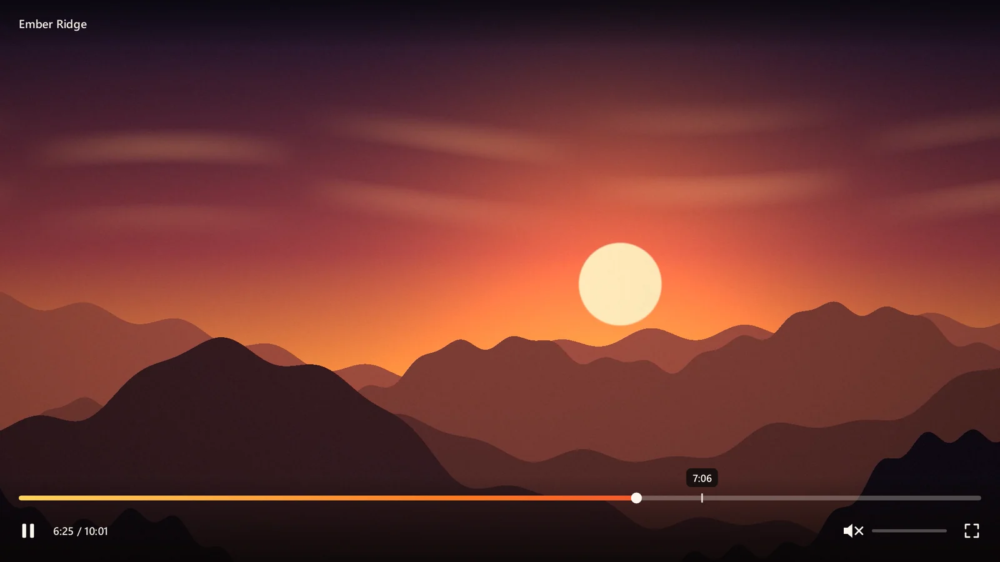
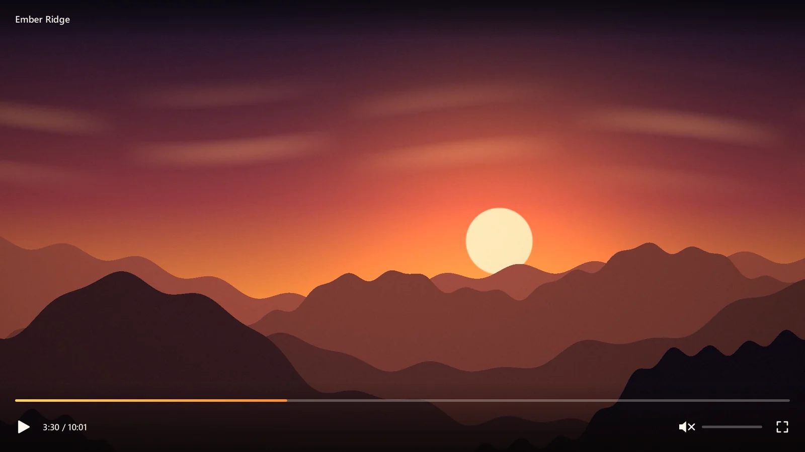
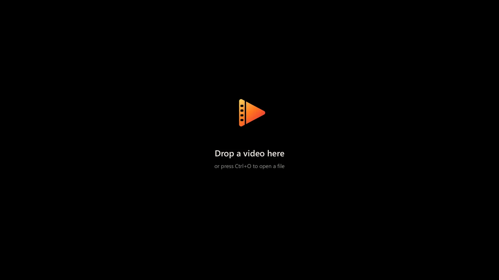

Beta Free and open source
Press play. Everything else gets out of the way.
Nitrate is a media player built in Rust on libmpv. Video goes from the hardware decoder straight to the screen, the controls fade when you watch, and it stays fast over remote desktop.
Windows 10 and 11, 64-bit. macOS and Linux are on the way.

Made to watch, not to look at
No skins, no sidebars, no ribbon. The film fills the window; the controls appear when you move the mouse and fade when you stop.
-
Zero-copy hardware decoding
Frames are decoded on the GPU and drawn on the same device. They never take a detour through main memory, so 4K stays smooth and the fans stay quiet.
-
Plays almost anything
Decoding, formats, subtitles and audio come from libmpv, a proven open-source playback engine. Nitrate is the fast, modern shell around it.
-
Fast over remote desktop
Nitrate notices a remote session and switches to static, animation-free chrome, so the connection only carries the video. Without a GPU it falls back to a software renderer and keeps playing.
-
Draws nothing when nothing changes
Nitrate has no frame loop of its own. Playing, it draws once per video frame and repaints its controls only when they change; paused and untouched, it draws nothing at all.
-
Updates on your terms
Installed copies check for a new release once a day. A small notice appears; nothing installs until you press Ctrl+Shift+U, and every download is checked against its published SHA-256.
-
Polite with your files
The setup needs no admin rights and adds Nitrate to "Open with" for 21 video and audio types. It never takes over a default behind your back; uninstall removes only its own entries.


Speed is the first feature
Every rule in Nitrate's code puts the picture first: video never waits for the interface, the interface never waits for the disk, and input answers in the next frame.
Measured on the 0.1.0 beta on a desktop test PC with a current discrete GPU, playing a 1080p30 H.264 file. Nitrate's benchmarks against plain mpv on the same machine are next; numbers appear here when they are measured, not before.
Keys you already know
- Space K
- Play or pause
- ← →
- Seek 5 s (with Shift: 1 s)
- J L
- Seek 10 s
- ↑ ↓
- Volume (or the mouse wheel)
- M
- Mute
- F, double click
- Fullscreen (Esc leaves)
- . ,
- Step one frame
- Ctrl+O
- Open a file
Get Nitrate
Nitrate is in beta: it plays files well, and playlists, track menus and settings are still to come. The newest release is , from .
Setup recommended
Installs for your user only, without admin rights, with a Start menu entry, "Open with" for media files and updates.
Portable
A zip with nitrate.exe and libmpv. Unpack anywhere and run; it changes nothing on your PC and doesn't update itself.
The setup isn't code-signed yet, so Windows may warn on first run: choose More info, then Run anyway. Every file is listed with its SHA-256 in SHA256SUMS.txt. Needs a 64-bit CPU with AVX2 (most PCs from 2015 on).